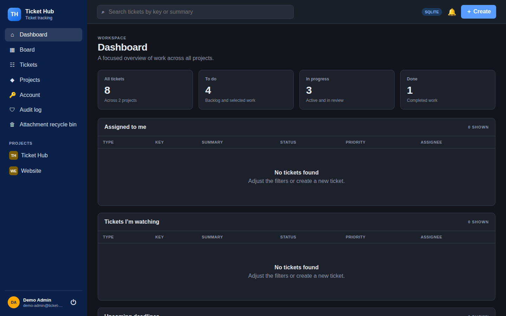

01 / KANBAN
Work moves across the board
Active work moves through clear statuses. Cards show the ticket key, title, priority, and other useful context. Visual WIP limits call attention to crowded columns.
Explore planning features →
Inside the app
These screenshots come from a demo installation. Open any image to view it at its original resolution.
Active work moves through clear statuses. Cards show the ticket key, title, priority, and other useful context. Visual WIP limits call attention to crowded columns.
Explore planning features →The backlog has its own screen. Its list is paginated and keeps manual ordering, so planned tickets do not crowd the active board.
Explore planning features →
Status, ownership, dates, comments, work logs, and history are easy to find together. A direct URL such as /browse/TH-123 opens a specific ticket.

The dashboard shows assigned and watched work alongside a status summary. The app supports light and dark themes based on the system setting.
Explore the dashboard →
Next step
Start with Docker Compose and create the first administrator.
{kind=link}